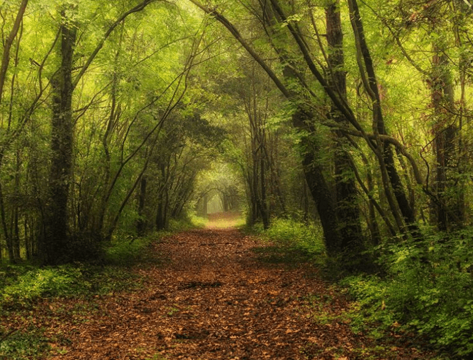

Il Bosco Antico si estende su una superficie di 11.754 ettari. La parte più vetusta è il querceto in cui si trovano esemplari di centinaia di anni. La quercia più vecchia risulta avere ben 274 anni!
Sono molti i visitatori che ogni anno percorrono i sentieri del bosco: Il nostro obiettivo è salvaguardare la biodiversita e mantenere pulito il bosco.
 Viviamo il bosco!